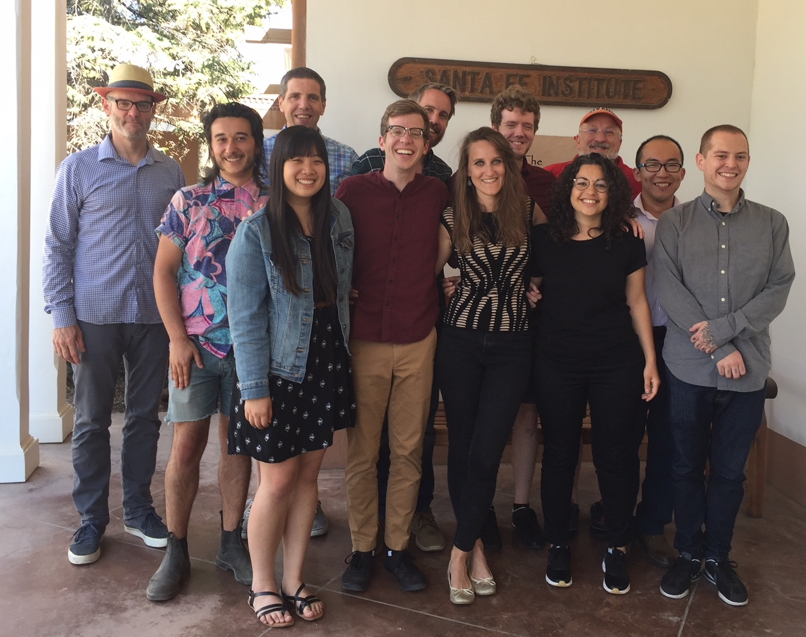
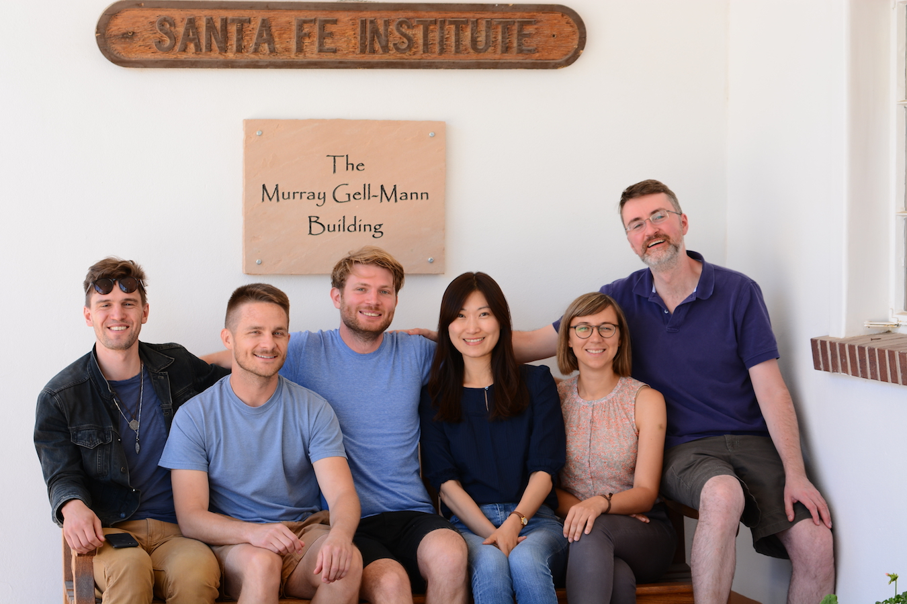

24th Annual Workshop
2018 Graduate Workshop in Computational Social Science Modeling and Complexity
Santa Fe Institute
, 17 June to 30 June, 2018

Graduate Workshop, 2018

Advanced Graduate Workshop, 2018
Program Announcement
Students
Faculty
Reading List
Schedule
Homework Problem
Student Projects
GWS Wiki
Return to
Computational Economics
page.
John H. Miller
, miller@santafe.edu.